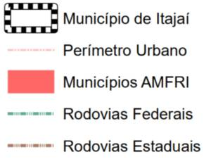
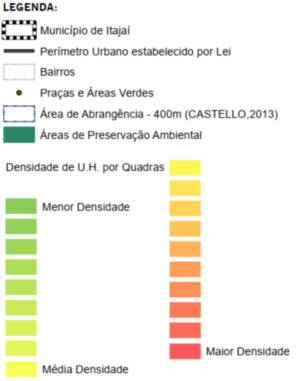

Município de Itajaí Plano Diretor 2019 - Mapas Temáticos
Município de Itajaí Plano Diretor 2019 - Mapas Temáticos
Vazios Urbanos no Perimetro Urbano
Vazios Urbanos na Área Urbana Consolidada
Usos Industriais e Zoneamento Específico

Uso e Ocupação do Solo na Área Urbana
Situação das Áreas Públicas
Postos de Guarda Vidas - Praias
Necessidade de Rotas Acessíveis e Acessibilidade Atual
Macrozoneamento Vigente
Localizacao na Regiao Metropolitana
Localizacao na AMFRI

Locais de Implantação de Habitação de Interesse Social
Identificação dos Programas Previstos
Hierarquia Viária - Perimetro Urbano
Hierarquia Viária - Escala Municipal
Equipamentos Públicos

Densidade Populacional x Quadras da Planta Cadastral
Densidade Populacional x Bairros
Concentração dos Pontos de Embarque Desembarque do Transporte Publ. Coletivo
Censo 2010 -Densidade Demográfica
Áreas Urbanas Consoliddas x Territorio Municipal
Áreas Urbanas Consolidadas x Perímetro Urbano Estabelecido por Lei
Arborização Urbana
Abrangencia dos Equipamentos de Saúde
Abrangencia dos Equipamentos de Esporte e Lazer

Abrangencia dos Equipamentos de Educação

Abrangencia dos Equipamentos de Assistencia Social
Abrangência das Praças e Áreas Verdes

Malha Cicloviária Existente e Propostas do PLanMob
Polos Geradores de Viagens
Áreas de Risco de Inundação
Saneamento - Água e Esgoto
Áreas Ambientais de Preservação Permanente - Município
Áreas Ambientais de Preservação Permanente - Perímetro Urbano